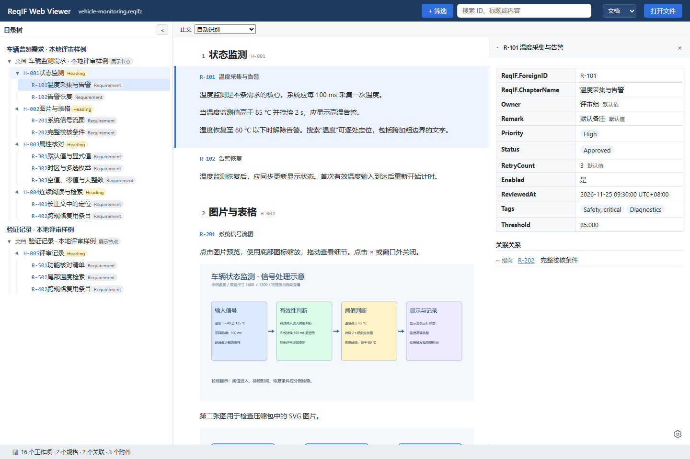
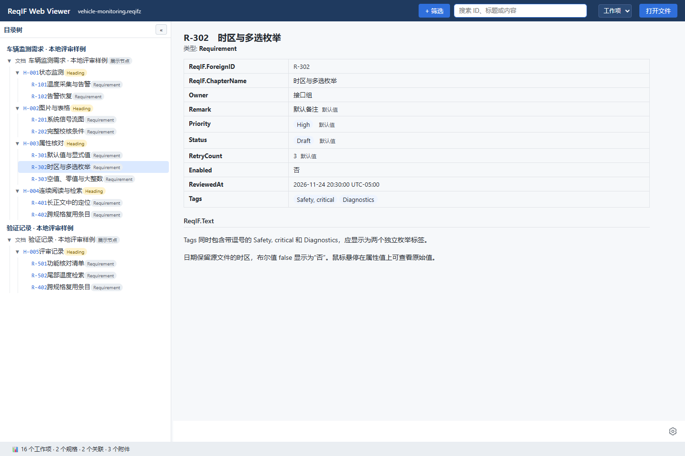
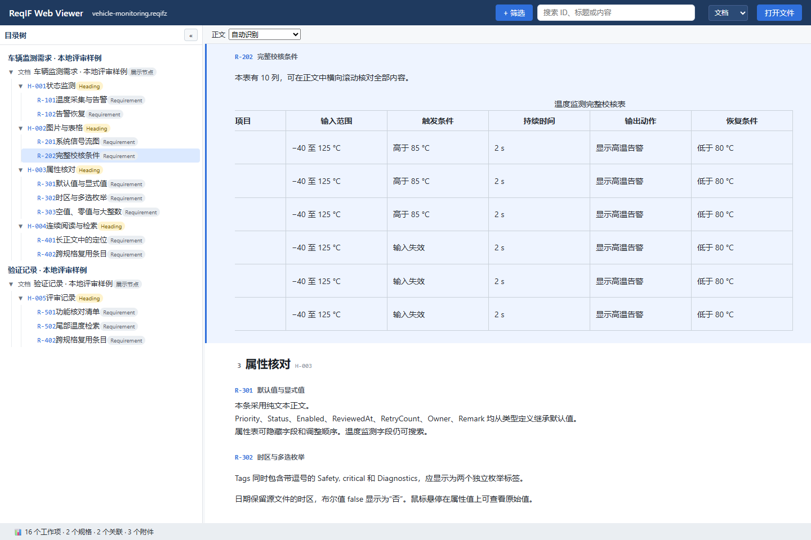
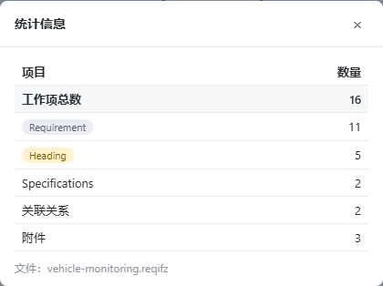

文档与工作项
按文件原有顺序连续阅读各规格，目录与正文联动。切换工作项视图核对单条记录，正文字段可手动选择。
打开本机的 ReqIF / ReqIFz 文件，按文档层级阅读需求，搜索正文、筛选属性并查看关联关系。文件解析和附件读取都在当前浏览器中完成。

需求交换文件把章节、正文、属性与附件放在一起。评审时需要连续阅读，核对时又要通过 ID 或关键词快速找到某一条需求。
ReqIF Web Viewer 将文档阅读和工作项详情放在同一个网页中。通过浏览器选择文件即可开始，也能下载源码后打开 index.html 离线使用。
所有截图均来自当前版本实际运行，使用虚构的车辆监测需求。点击图片可查看原图。
按文件原有顺序连续阅读各规格，目录与正文联动。切换工作项视图核对单条记录，正文字段可手动选择。
搜索 ID、标题和内容，组合属性筛选。支持全部或任一关键词匹配，正文高亮、命中次数与上一处 / 下一处跳转。
打开工作项后，从右下角齿轮勾选字段，通过左侧手柄拖动或 ↑ / ↓ 按钮排序。显示偏好保存在当前浏览器。
区分多选枚举、布尔值、日期和数值，标注继承的默认值。日期保留源时区，悬停可查看原始内容。
图片打开时适应窗口，可用底部图标或滚轮缩放、拖动平移。宽表格在正文中横向滚动，其他附件点击后下载。
点击出入向关联继续查阅。统计按真实对象计算，重复引用只计一次，补充标题作为展示节点处理。
搜索「温度」并筛选 High 优先级后，结果显示命中字段、摘要和章节路径。打开条目后可查看正文高亮，再通过上一处 / 下一处继续定位。

保留原始字段名与值提示，常用显示设置放在工作项面板内。


图片和设置窗口均可通过 × 或点击外部关闭，查阅操作集中在内容附近。


同一工作项被多个规格引用时只计一次。由规格名称补充的文档标题标记为展示节点，工作项与类型数量以源文件中的对象为准。
统计窗口同时列出规格、关联关系与附件数量。示例包含 16 个工作项，其中 Heading 5 个、Requirement 11 个。

在线使用无需安装运行环境，选择本机文件即可开始。
进入在线工具，点击「打开文件」或将文件拖入页面。
ReqIFz 包内应包含一个 ReqIF 主文件，可附带图片和其他附件。
使用目录、搜索、筛选或关联条目定位需求，并在两种视图间切换。